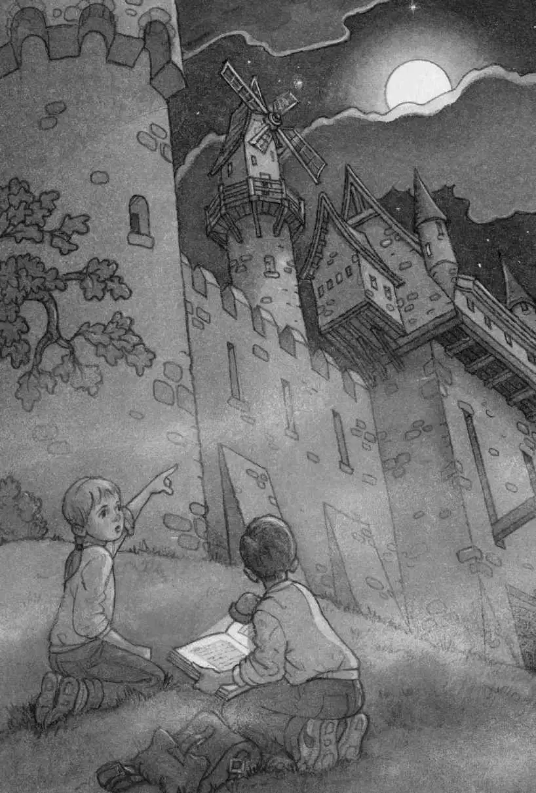

Annie was under the tree, looking across the foggy ground.
“The knight’s riding toward that bridge, I think,” said Annie. “The bridge goes to the castle.”
“Wait. I’ll look it up,” said Jack. “Give me the flashlight!”
He took the flashlight from Annie and pulled the castle book out of his pack. He opened it to the page with the leather bookmark.
He read the words under the picture of the knight:
This is a knight arriving for a castle feast. Knights wore armor when they traveled long and dangerous distances. Armor was very heavy. A tournament helmet could weigh up to forty pounds.
Wow. Jack had weighed forty pounds when he was five. It would be like riding a horse with a five-year-old on your head! he thought.
Jack pulled out his notebook. He wanted to take notes, as he’d done on their dinosaur trip.
He wrote:
heavy head
What else?
He turned the pages of the castle book. He found a picture that showed the whole castle and the buildings around it.
“The knight’s crossing the bridge,” said Annie. “He’s going through the gate…. He’s gone.”
Jack studied the bridge in the picture.
He read:
A drawbridge crossed the moat. The moat was filled with water, to help protect the castle from enemies. Some people believe crocodiles were kept in the moat.
Jack wrote in his notebook:
crocodiles in moat?
“Look!” said Annie, peering through the mist. “A windmill! Right over there!”

“Yeah, there’s a windmill in here, too,” said Jack, pointing at the picture.
“Look at the real one, Jack,” said Annie. “Not the one in the book.”
A piercing shriek split the air.
“Yikes,” said Annie. “It sounded like it came from that little house over there!” She pointed through the fog.
“There’s a little house here,” said Jack, studying the picture. He turned the page and read:
The hawk house was in the inner ward of the castle. Hawks were trained to hunt other birds and small animals.
Jack wrote in his notebook:
hawks in hawk house
“We must be in the inner ward,” said Jack.
“Listen!” whispered Annie. “Do you hear that? Drums! Horns! They’re coming from the castle. Let’s go see!”
“Wait,” said Jack. He turned more pages of the book.
“I want to see what’s really going on, Jack. Not what’s in the book,” said Annie.
“But look at this!” said Jack.
He pointed to a picture of a big party. Men were standing by the door, playing drums and horns.
He read:
Feasts were held in the Great Hall. Fanfares were played to announce different dishes in a feast.
“You can look at the book. I’m going to the real feast,” said Annie.
“Wait,” said Jack, studying the picture. It showed boys his age carrying trays of food. On the trays were peacocks with all their feathers, whole pigs, and pies.
Peacocks? Jack thought.
He wrote:
they eat peacocks?
Jack held up the book to show Annie. “Look, I think they eat—”
Where was she?
Jack looked through the fog.
He heard the real drums and the real horns. He saw the real hawk house, the real windmill, the real moat.
He saw Annie dashing across the real drawbridge. Then she vanished through the gate leading to the castle.